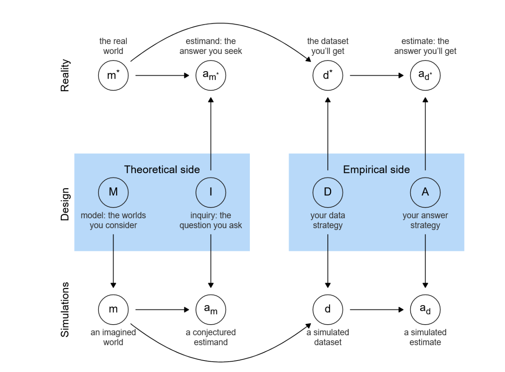

17 Projects
18.1 Our plan
- We will break up into 6 teams of 3–4 people
- Over the rest of the week you will design, implement, analyze, and present an experiment
18.2 MIDA framework
What is a Research Design?
- Model: what are the important variables (eg \(X\) and \(Y\)), what causes what, and how?
- Inquiry: a question stated in terms of the model
- Data strategy: sampling, assignment, measurement
- Answer strategy: how we summarize the data
18.3 MIDA diagram

18.4 MIDA and reliable design
- If you can say what M, I, D, and A are for your project then we have enough to know whether you have a reliable design (at least conditional on the M you imagine)
- We can tell whether the estimate that the Answer strategy produces using your Data, is close to the estimand (the true answer to your Inquiry, given the Model)
18.5 First steps
- Come up with a question and a treatment: find an \(X\) and a \(Y\). The \(X\) is something that you have to be able to randomly vary; the \(Y\) is the outcome you care about
- Note: this is primarily a learning exercise so these are experiments that we want to implement in the next days
- Figure out a data strategy: how will you implement the intervention? How will you measure outcomes?
- Figure out an answer strategy: what analysis will you do? How will you report results?
18.6 Second steps
- Summarize these design elements in terms of MIDA
- Complete the design form
- If you want to try to declare a design formally, talk with us
18.7 What kind of intervention can you reasonably do in such a short period?
Actually, lots. Let’s think together through a set of possibilities:
- Effect of coffee on attention
- Effect of breaks on learning progress
- Effect of taking part in a group discussion on understanding a topic
- Effect of providing some information on something
- Effect of spending time with someone from a different language group